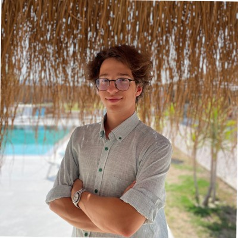
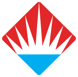

Umut's Resume
This page will consist of:
- Summary
- Education
- Work Experience
- Skills
- Accomplishments
- Summary
- Education
- Bahçeşehir highschool 
- TED University, Software Engineering
- Work Experience
- Friends, Summer Camps
- Bonelli, Bakery
- Kocatepe, Cafe
- Skills
- Bash Scripting
- Penetration Testing
- Basic Splunk
- Java
- Object Oriented Programming
- Project Management
- UML language
- Fundementals of network
- Web Designing -HTML,CSS,JS-
- Accomplishments
I am currently sophomore student in TED University and I major Software Engineering. I know Python and Java sufficiently. I am also learning SQL and HTML-CSS-JS. Other than learning outcomes from my University I am highly interested in Cyber-Security and actively imroving myself by community activities, educations and personal projects. I enjoy both penetration testing and Security Analyzing. I want to find what I will be doing as my career with my first internship and finally expertise on one of the fields. So I am both open to voluntary and compulsary internships.
Science and Technology,
2018 - 2022
I aimed to be an engineer since middle school, first step I took towards this goal was going to a high school with STEM education. This school added me so many things. Despite other schools we did not only go prepared for collage prep exam in our school, we also learned web designing, and basic robotics with arduino.

Bachelors of Engineering,
2022 - Currently student
After finishing half of my highschool, I knew I had to major something about software and programming. TED did not only fill my hunger for software I also had the chance to participate in many activities. Thanks to TEDU I had chance to design projects for Non-Governmental organisation, GSM. I also attended my schools coomunity activities. Some of them are, I got accepted to the Board of Directors at TEDU E-Sports and I am actively participating in classes that Cyber Tedu is giving. I am aiming to build my career on Cyber-Security.
I did not have much experience in the Industury. I am currently a sophomore student and looking for internship and job opportunities for Cyber-Security.
I want to mention about the times I worked out of the industry. I still find it valable to work in organizations to build the displine required for other workspaces.
Summer Camp Coach,
2021 - 2023
These camps meant so much for me because I started as a camper when I was 14. Coaches at that time were so chariscmatic and role-model for me I decided to be a coach for smaller kids when I grow up. I both took responsibility of kids and the facility for the camp area while I was working. I also enjoyed working with kids.
Sales,
2022(1 month)
I worked for Bonelli at my winter holiday. I wanted to get some work experience at some place as I just turned 18. I learned to maintain relationships with both customers and co-workers.
Barista,
2023(1 month)
I worked for Bonelli at the end of my summer for 1 month. Even though it was not aim to specialize in coffee, I admired preparing coffee and I wanted to learn more about it while earning some money. Because of the management I had some difficulties but I learned how to be patient about it. I worked until my school started and I left a good impression.
Some of my skills I rely on:
It would be hard to update my recent accomplishments every time on this website so I will leave links to my profiles: